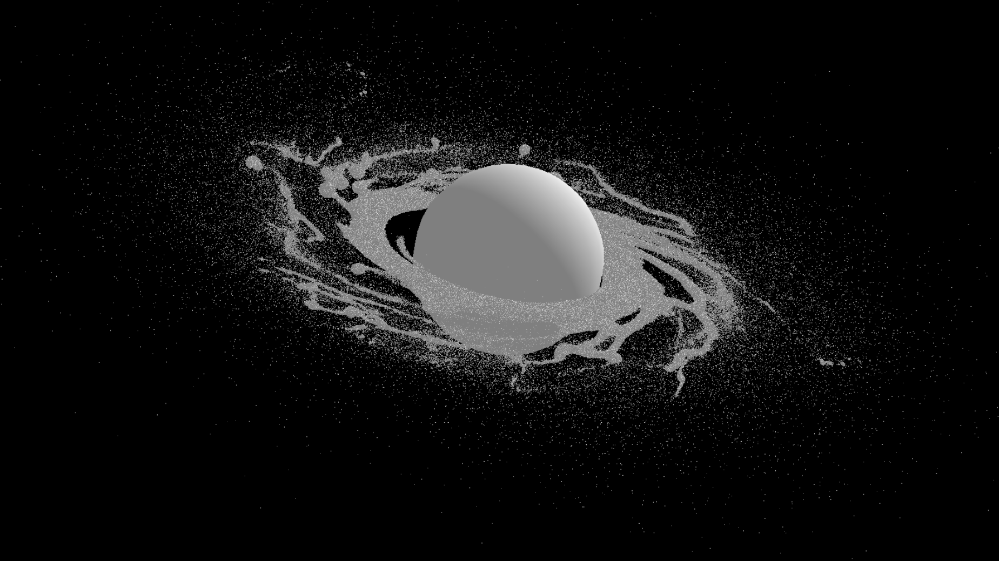

PLANETARY SCIENTIST
Gustavo Madeira.

SATELLITE FORMATION · NUMERICAL SIMULATIONSRESEARCH PROFILE
Research areas and methods
My research focuses on the formation and dynamical evolution of natural satellites, planetary rings and small bodies in the Solar System and exoplanetary systems.
I work primarily with numerical simulations, including N-body, hydrodynamical and SPH methods, and compare the results with analytical models and observational data.
About me ↗RESEARCH AREAS
Selected research topics


RESEARCH GROUP / GODS
Group of Origin and Dynamics of Satellites
I am the Principal Investigator of GODS, a research group that studies the formation, orbital evolution and detectability of natural satellites in the Solar System and in extrasolar systems.
GODS website ↗ GROUP OF ORIGIN AND DYNAMICS OF SATELLITES
GROUP OF ORIGIN AND DYNAMICS OF SATELLITES